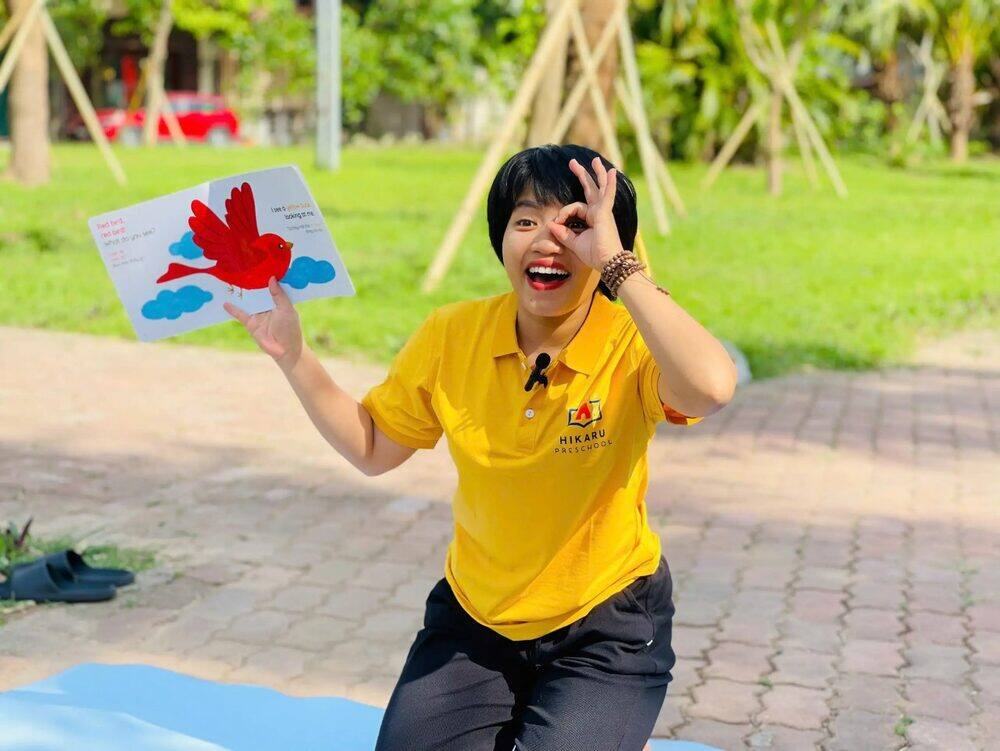
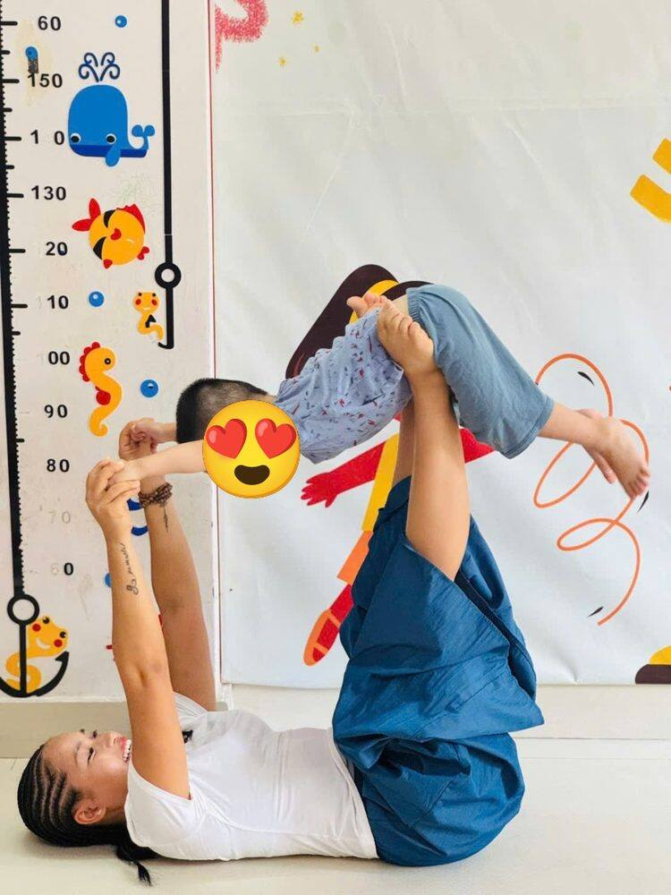

Chánh niệm cho bé
Bé mê màn hình, khó rời iPad, điện thoại: yoga và trò chơi giúp con cân bằng

“Con ơi, tắt máy đi ăn cơm.” Lần thứ nhất, con không nghe thấy. Lần thứ hai, “Dạ, xíu nữa.” Lần thứ ba, mẹ cầm lấy máy. Và cả nhà nghe một tràng khóc.
Cảnh ấy, cô nghe các mẹ kể nhiều lắm. Có mẹ nhắn Sophia lúc mười giờ đêm, con vẫn đòi thêm một tập. Có bố bảo, không đưa điện thoại thì con không chịu ăn.
Ở lớp, cô cũng thấy. Có bạn vừa đến đã hỏi: “Hôm nay cô có cho xem video không?” Có bạn ngồi cúi rất sâu, vai rụt lại, mắt hay nheo. Có bạn nằm thư giãn được mười giây là ngồi bật dậy, như thể yên lặng là một thứ gì đó lạ lẫm.
Sophia không nghĩ màn hình là kẻ xấu. Con gọi video cho bà. Cả nhà cùng xem một bộ phim hay. Con học một bài hát tiếng Anh. Những điều ấy đẹp. Cái cô lo là liều lượng, và những gì đang bị màn hình lặng lẽ lấy mất: giờ ngủ, giờ chạy nhảy, giờ được nói chuyện với người thương.
Bài này cô viết để chia sẻ những gì cô biết, những gì cô làm ở lớp và mách các bố mẹ làm ở nhà. Không phải để ai thấy có lỗi. Chỉ là để mình có thêm vài cách, nhẹ nhàng thôi.
Vì sao con khó rời màn hình đến vậy?
Màn hình được làm ra để giữ mắt người xem. Video này hết, video sau tự chạy. Màu sắc rực, âm thanh vui, phần thưởng đến liên tục. Người lớn còn khó đặt điện thoại xuống, huống chi một em bé năm tuổi.
Cái “phanh” trong não con chưa làm xong. Phần não phía trước trán giúp mình dừng lại, chờ đợi, chuyển từ việc này sang việc khác. Nó lớn lên rất chậm, mãi đến tuổi trưởng thành mới hoàn thiện. Nên khi con không tự dừng được, đó không phải con hư. Đó là con chưa đủ lớn để làm việc ấy một mình.
Thế giới thật chậm hơn màn hình rất nhiều. Từ một đoạn phim hoạt hình sang bát cơm, giống như đang chạy trên đường lớn bỗng rẽ vào một con ngõ nhỏ. Con hụt hẫng. Con cáu. Cơn khóc lúc tắt máy, nhiều khi, là cái hụt của một lần chuyển cảnh quá đột ngột.
Hiểu được ba điều này, cô thấy mình bớt giận con đi nhiều. Và mình biết phải giúp con ở đâu: không phải mắng cho con biết, mà là làm cái phanh giúp con, cho đến khi con tự có.
Màn hình chạm vào con ở cả năm thể
Yoga nhìn con người trên năm thể: thân, khí, tâm, trí và tinh thần. Nhìn theo cách ấy, cô thấy giờ màn hình kéo dài không chỉ ảnh hưởng đôi mắt.
Và giấc ngủ. Ánh sáng màn hình buổi tối cùng những nội dung hồi hộp làm con khó vào giấc, ngủ muộn hơn. Bài Yoga giúp bé ngủ ngon có một nghi thức trước giờ ngủ bố mẹ có thể thử.
Bao nhiêu là vừa?
Đây là gợi ý của Tổ chức Y tế Thế giới (WHO, 2019) và Viện Hàn lâm Nhi khoa Hoa Kỳ (AAP, 2016). Không phải để chấm điểm bố mẹ. Chỉ là một cái mốc để mình nhìn lại.
| Tuổi | Màn hình | Điều quan trọng hơn |
|---|---|---|
| Dưới 18 tháng | Tránh, trừ gọi video với người thân | Được bế, được nói chuyện, được bò khắp nhà |
| 18 tháng đến 2 tuổi | Nếu có, chỉ nội dung chọn lọc, bố mẹ xem cùng | Người lớn gọi tên, kể lại điều con vừa thấy |
| 2 đến 5 tuổi | Không quá 1 giờ mỗi ngày, ít hơn càng tốt | Ít nhất 3 giờ chạy nhảy, ngủ đủ 10 đến 13 giờ |
| 6 tuổi trở lên | Có giới hạn rõ ràng, cả nhà cùng thống nhất | Không lấn vào giờ ngủ, giờ vận động, giờ ăn cùng nhau |
Số phút chỉ là một nửa câu chuyện. Nửa kia là con xem cái gì và với ai. Hai mươi phút mẹ con cùng xem một phim về đại dương rồi kể cho nhau nghe khác hẳn hai mươi phút con ngồi một mình lướt video ngắn.
Tắt máy mà không có nước mắt: bốn bậc hạ cánh
1. 🗣 Báo trước, hẹn từ lúc bật máy
Trước khi con xem, mình nói rõ: “Mình xem hai tập thôi nhé.” Hoặc: “Xem đến khi đồng hồ kêu.” Một tập phim, một trò chơi có điểm kết thúc rõ ràng thì dễ dừng hơn những video ngắn trôi mãi không hết.
2. ⏳ Một cái đồng hồ con nhìn thấy được
Trẻ nhỏ chưa hiểu “mười phút nữa” là bao lâu. Nhưng con nhìn được một vòng tròn đang ngắn dần. Đồng hồ cát, đồng hồ hẹn giờ trong bếp, hoặc cái đồng hồ ngay bên dưới đều được. Khi đồng hồ báo, người “nói không” là đồng hồ, không phải mẹ. Con bớt giận mẹ hơn hẳn.
⏳ Đồng hồ chuyển cảnh
Bật đồng hồ ngay lúc con bắt đầu xem, để màn hình máy tính hay điện thoại của bố mẹ ở chỗ con nhìn thấy. Gần hết giờ, đồng hồ chuyển vàng và nhắc nhẹ. Hết giờ, chuông ngân và gợi ý một trò để “hạ cánh”.
Chọn số phút, rồi bấm Bắt đầu.
3. 👋 Con tự tắt, và chào máy
Cho con là người bấm nút, người gập máy. Rồi chào nó: “Chào bạn máy, hẹn mai gặp lại.” Máy về “nhà ngủ” của nó, một cái giỏ hay một ngăn kéo ở phòng khách, không phải trong phòng ngủ. Nghe thì như trò trẻ con. Nhưng cô thấy, một nghi thức nhỏ lặp lại mỗi ngày giúp con chuyển cảnh dễ hơn rất nhiều.
4. 🦁 Một hoạt động cầu nối, ngay lập tức
Sau khi tắt máy, cô không để con rơi vào chỗ trống. Ngay lúc ấy, có một việc vui đang chờ: ba lần Sư tử thở, một vòng Mắt cú mèo ở cửa sổ, hay video bảy phút nhỏ ở dưới. Cơ thể được chuyển động thì cái hụt hẫng đi qua nhanh hơn.
Nếu con vẫn khóc? Có những hôm vẫn sẽ khóc. Cô ngồi xuống ngang tầm con, gọi tên điều con đang thấy: “Con tiếc quá, đang đến đoạn hay.” Không giảng giải. Không mặc cả thêm năm phút. Giữ lời hẹn, nhẹ nhàng mà vững. Rồi thở cùng con. Bài Yoga cho bé hay cáu giận, khóc nhè có thêm nhiều cách đi cùng con qua những phút như thế.
Video: Tắt máy rồi, mình tập nhé
Gần hai phút, làm ngay sau khi con chào máy. Mắt cú mèo, chớp mắt cánh bướm, rùa rụt cổ, sư tử thở, rắn nhỏ ngóc đầu, bóng thở và lòng bàn tay ấm. Bố mẹ tập cùng con nhé.
Điều cô để ý: video này để bắt đầu thói quen. Sau vài hôm, khi con đã thuộc, cô tắt luôn cả video, mẹ con tự hô cho nhau. Mục tiêu là rời màn hình mà.
8 bài yoga nhỏ sau giờ màn hình
Mỗi bài một đến hai phút. Không cần làm hết. Chọn hai, ba bài con thích là đủ cho một ngày.
1. 🦉 Mắt cú mèo: nhìn xa, nhìn gần
Con đứng ở cửa sổ hoặc ban công. Tìm một thứ thật xa: ngọn cây, mái nhà, đám mây. Nhìn nó, đếm chậm đến ba. Rồi giơ ngón trỏ trước mũi, cách chừng một gang tay, nhìn đầu ngón tay, đếm đến ba. Xa, gần. Năm lần.
Điều cô để ý: Khi con nhìn màn hình, đôi mắt phải “gồng” để nhìn gần rất lâu. Nhìn xa là lúc mắt được thả lỏng. Cô hay nhắc theo kiểu chơi: “Cú mèo nhà mình tìm được gì ngoài kia?”
2. 🦋 Chớp mắt cánh bướm
Chớp mắt thật nhẹ, thật nhanh, như cánh bướm vỗ. Mười lần. Rồi nhắm mắt, nghỉ, đếm đến năm.
Điều cô để ý: Lúc dán mắt vào màn hình, ai cũng chớp ít hẳn đi, trẻ con cũng vậy. Mắt khô, con hay dụi. Mỗi lần chớp là một lần mắt được tưới nước.
3. 🤲 Lòng bàn tay ấm
Xoa hai bàn tay vào nhau thật nhanh cho ấm lên. Nhắm mắt, úp nhẹ lòng bàn tay lên hai mắt, không đè. Tối và ấm. Thở chậm năm hơi, rồi từ từ mở tay ra.
Điều cô để ý: Đây là trò các con thích nhất. Nhiều bạn nói “ấm như cái chăn”. Cô nhắc con rửa tay trước, và không day, không ấn vào nhãn cầu.
4. 🐢 Rùa rụt cổ
Ngồi thẳng. Hít vào, vươn cổ lên thật cao như chú rùa thò đầu ra khỏi mai. Thở ra, kéo vai lên sát tai, rụt cổ vào. Rồi thả vai xuống thật mềm. Năm lần.
Điều cô để ý: Sau một lúc cúi xuống điện thoại, cổ và vai con cứng lắm. Bài Bé ngồi nhiều, hay gù lưng có thêm nhiều động tác cho cái cổ.
5. 🐍 Rắn nhỏ ngóc đầu
Nằm sấp, hai bàn tay đặt dưới vai, khuỷu tay ôm sát người. Hít vào, ngóc đầu và ngực lên, nhìn về phía trước như chú rắn tò mò. Thở ra, nằm xuống, má áp lên thảm. Ba lần.
Điều cô để ý: Động tác này mở ngực, ngược hẳn với dáng cúi gập trên máy. Cô chỉ cho con lên vừa sức, bụng vẫn chạm thảm, không ưỡn quá.
6. 🐱 Mèo cong lưng, chó con vươn vai
Chống hai tay, hai gối. Thở ra, cong lưng lên như chú mèo giận. Hít vào, võng lưng, ngẩng đầu “meo”. Vài lần. Rồi nhón gối lên, đẩy mông cao thành chú chó con vươn vai.
Điều cô để ý: Ngồi lâu, cột sống của con ít được cử động. Mèo, chó là hai con vật các bạn nhỏ rất dễ nhập vai, nên con làm nhiều lần mà không chán.
7. 🦁 Sư tử thở
Quỳ ngồi trên gót, hai tay đặt trên gối, xòe ngón như vuốt sư tử. Hít vào bằng mũi thật đầy. Há miệng, lè lưỡi, mắt mở to, thở ra “Haaa!”. Ba lần.
Điều cô để ý: Cơn bực khi tắt máy cần chỗ đi ra. Sư tử thở cho con một cách để xả nó ra ngoài, vui, ồn ào, và an toàn. Thường đến lần thứ ba là con đã cười.
8. 🎈 Bóng thở rồi nằm yên

Ngồi hoặc nằm. Hai tay ôm một quả bóng tưởng tượng trước bụng. Hít vào, bóng to dần, tay mở ra. Thở ra, bóng nhỏ lại. Năm hơi. Rồi nằm xuống, nhắm mắt, nghe tiếng thở của mình một chút.
Điều cô để ý: Thở chậm là cách nhanh nhất để một cơ thể đang “chạy” chậm lại. Muốn thêm, bố mẹ xem bài Hơi thở bong bóng và Yoga với gấu bông.
Giỏ thay màn hình
Tắt máy rồi thì làm gì? Câu hỏi này quan trọng hơn cả việc tắt. Nhà nào cũng nên có một “giỏ thay màn hình”: vài cuốn truyện, đất nặn, bóng bay, bộ thẻ tư thế yoga, một con gấu bông. Và một danh sách trò chơi cả nhà cùng làm.
🧺 Giỏ thay màn hình: bốc một trò
Khi con hỏi “Giờ con làm gì?”, cho con tự bấm. Con được chọn thì con vui lòng đi theo hơn.
16 trò nhỏ, không cần màn hình.

Kể chuyện thay vì bật video. Một câu chuyện kể bằng giọng bố mẹ, có ngừng, có hỏi, có làm tư thế con vật theo, nuôi trí tưởng tượng của con theo một cách khác hẳn. Trên trang có hơn năm mươi câu chuyện yoga theo chủ đề để bố mẹ kể cho con.

Chơi cùng người lớn. Mười phút bố làm máy bay, mẹ làm đường hầm cho con chui qua, con nhớ lâu hơn cả tiếng đồng hồ xem phim. Bài Yoga đôi và 20 trò chơi trong lớp Yoga có rất nhiều trò như vậy.

Ra ngoài trời mỗi ngày. Nhiều bác sĩ nhãn khoa khuyên trẻ được ở ngoài trời khoảng hai giờ mỗi ngày, cộng dồn cả lúc đi học, đi chơi. Ánh sáng tự nhiên và việc nhìn xa giúp đôi mắt đang lớn của con. Không cần đi đâu xa. Sân chung cư, công viên gần nhà, một gốc cây là đủ.
Cả nhà cùng đổi một chút
Cô nói thật nhé: con nhìn mình nhiều hơn nghe mình. Nên bước đầu tiên, nhiều khi, là ở chiếc điện thoại của chính bố mẹ. Cô cũng thế thôi, cũng có lúc cầm máy lên mà chẳng nhớ mình định làm gì.
- Hai chỗ không có màn hình: bàn ăn và giường ngủ. Cả người lớn cũng vậy. Bữa cơm không có màn hình là bữa con được nói chuyện, được nếm, được biết mình no. Bài Bé biếng ăn, đầy bụng có thêm về bữa ăn vui.
- Một giờ trước khi ngủ, tắt hết. Thay bằng tắm nước ấm, đọc truyện, massage nhẹ. Xem bài Massage cho bé.
- Xem cùng con khi có thể. Hỏi con: “Bạn ấy đang thấy thế nào nhỉ?” Màn hình thành một câu chuyện chung, không còn là bức tường giữa hai người.
- Màn hình không phải cách dỗ duy nhất. Lúc con khóc, đưa máy thì con nín rất nhanh. Nhưng con lại chưa được tập cách tự dịu xuống. Thử một hơi thở, một cái ôm, một trò Sư tử thở trước đã.
- Không dùng màn hình làm phần thưởng hay hình phạt chính. Khi máy thành “giải thưởng”, con càng thấy nó quý giá hơn.
- Bớt từ từ. Nếu con đang xem ba giờ mỗi ngày, mỗi tuần bớt mười lăm phút thôi, và lấp vào đó một trò con thích. Cắt đột ngột thường làm cả nhà mệt.
- Thương cả chính mình. Có những ngày mẹ quá mệt, đưa máy cho con để nấu nốt bữa cơm. Không sao cả. Mình làm tốt nhất có thể trong từng ngày.
Bố mẹ cũng hay mỏi mắt, mỏi cổ, đầu óc nặng vì điện thoại? Cô có bài riêng cho người lớn: Yoga cho người dính điện thoại, đầu óc quá tải. Mẹ tập, con nhìn, con tập theo.
Khoa học nói gì?
Phần lớn các nghiên cứu dưới đây cho thấy mối liên quan, chưa phải bằng chứng rằng màn hình là nguyên nhân duy nhất. Nhưng chúng cùng chỉ về một hướng, nên cô nghĩ đáng để bố mẹ biết.
Năm 2019, nhóm của Sheri Madigan (Đại học Calgary, Canada) theo dõi gần 2.500 trẻ, đăng trên JAMA Pediatrics. Trẻ xem màn hình nhiều hơn lúc 2 và 3 tuổi có kết quả sàng lọc phát triển kém hơn lúc 3 và 5 tuổi, ở các mặt như giao tiếp, vận động, giải quyết vấn đề.
Năm 2020, John Hutton và cộng sự (Bệnh viện Nhi Cincinnati, Mỹ) chụp MRI não của 47 trẻ từ 3 đến 5 tuổi, cũng đăng trên JAMA Pediatrics. Trẻ dùng màn hình nhiều hơn mức khuyến nghị có các bó chất trắng liên quan đến ngôn ngữ và khả năng đọc kém “chắc” hơn. Nghiên cứu nhỏ, các tác giả nói cần thêm nghiên cứu.
Năm 2022, Jenny Radesky và cộng sự (Đại học Michigan, Mỹ) theo dõi hơn 400 gia đình có con 3 đến 5 tuổi, đăng trên JAMA Pediatrics. Những bé thường được đưa thiết bị để dỗ cho nín về sau có xu hướng phản ứng cảm xúc mạnh hơn. Đó là lý do cô viết “màn hình không phải cách dỗ duy nhất” ở trên.
Về đôi mắt, năm 2015 nhóm của Mingguang He (Trung Quốc) đăng trên JAMA: ở Quảng Châu, học sinh lớp một được thêm 40 phút hoạt động ngoài trời mỗi ngày ở trường. Sau ba năm, tỉ lệ mắc cận thị mới ở nhóm này là 30,4%, so với 39,5% ở nhóm không thêm giờ ngoài trời.
Về giấc ngủ, tổng quan của Lauren Hale và Stanford Guan năm 2015 trên Sleep Medicine Reviews xem lại 67 nghiên cứu: khoảng 90% trong số đó thấy dùng màn hình nhiều đi cùng với đi ngủ muộn hơn hoặc ngủ ít hơn ở trẻ em và tuổi teen.
Trong cuốn sách bán chạy The Anxious Generation (Thế hệ lo âu, 2024), nhà tâm lý học Jonathan Haidt viết rằng tuổi thơ đã chuyển từ “tuổi thơ dựa trên vui chơi” sang “tuổi thơ dựa trên điện thoại”. Ông đề nghị trả lại cho trẻ thật nhiều giờ chơi tự do, chơi ngoài trời, chơi với bạn bè thật. Cô đọc mà thấy rất gần với lớp yoga của mình: các con chỉ cần được chơi, được chạy, được thở, được ở cạnh nhau.
Khi nào nên đưa con đi khám
Yoga và trò chơi giúp con cân bằng, nhưng không thay được bác sĩ. Bố mẹ đưa con đi khám nếu thấy:
- Về mắt: con hay nheo mắt, nghiêng đầu khi nhìn, ngồi sát tivi, dụi mắt nhiều, kêu nhìn mờ, đau đầu sau khi học, hoặc mắt có vẻ lệch. Khám mắt ở bác sĩ nhãn khoa. Tốt nhất là khám định kỳ mỗi năm từ tuổi mẫu giáo, kể cả khi con chưa kêu gì.
- Về lời nói và giao tiếp: 2 tuổi con chưa nói được từ đơn, ít nhìn vào mắt người khác, ít quay lại khi được gọi tên. Bố mẹ đưa con đi khám nhi khoa phát triển. Bố mẹ khoan tự kết luận “chắc tại xem điện thoại nhiều”, vì có những nguyên nhân khác cần được phát hiện sớm.
- Về cảm xúc và hành vi: cơn giận khi tắt máy rất dữ dội và kéo dài, con đánh người hoặc tự làm đau mình, bỏ ăn, mất ngủ, thu mình, không còn hứng thú với bất cứ thứ gì ngoài màn hình, việc học sa sút rõ. Bố mẹ tìm đến bác sĩ nhi, bác sĩ tâm lý hoặc tâm thần nhi.
Vài điều cô hay để ý
- Yoga không phải hình phạt thay cho màn hình. “Tắt máy, ra kia tập yoga” làm con ghét cả yoga. Cô mời con chơi, không bắt.
- Mắt nghỉ nhẹ nhàng. Không day, không ấn vào nhãn cầu. Úp tay thì rửa tay sạch trước.
- Thở chậm, không nín thở. Với trẻ nhỏ cô không cho giữ hơi lâu, không tập các kiểu thở mạnh, gắng sức.
- Dừng khi con quá tải. Nếu con đang khóc to, cô không ép con tập. Ngồi gần, thở chậm, đợi con dịu rồi mới mời.
- So với chính con hôm qua. Hôm qua tắt máy khóc mười phút, hôm nay khóc năm phút. Đó là tiến bộ.
🌟 Điều các con mang về
Trong yoga có một nhánh tên là Pratyahara, thu các giác quan từ bên ngoài về bên trong. Nghe thì xa vời. Nhưng với một em bé, nó chỉ là những phút rất nhỏ: nhắm mắt dưới lòng bàn tay ấm, nghe tiếng thở của mình, nghe tiếng chim ngoài cửa sổ.
Màn hình kéo đôi mắt con ra ngoài suốt cả ngày. Yoga dạy con đường quay về. Ngắn thôi, nhưng mỗi ngày một chút, con sẽ biết đường.
Không cần nhà mình phải “sạch” màn hình. Chỉ cần mỗi ngày con có những khoảng được ngẩng lên, nhìn xa, chạy nhảy, và được nhìn thấy gương mặt bố mẹ đang cười với mình. Hít vào tâm tĩnh lặng. Thở ra, miệng mỉm cười.
🌿 Thầy cô muốn mang yoga đến cho các bạn nhỏ?
Cách dẫn một buổi từ động đến tĩnh, chọn trò chơi theo tuổi, giữ chân các con mà không cần đến màn hình… cô hướng dẫn kỹ trong khóa Đào tạo Huấn luyện viên Yoga trẻ em. Bố mẹ muốn hỏi thêm về con, cứ nhắn cô.